其实广东没啥好玩的（特别适合北方的名胜古迹比起来）
真要说玩的话，其实大部分是人工的旅游景点或者乐园（贵贵）
学弟没去过，但是动物园的熊猫三胞胎挺出名的，
水上世界和欢乐世界就是巨大的游乐园，听说也非常好玩；
放几张图和链接自己看吧
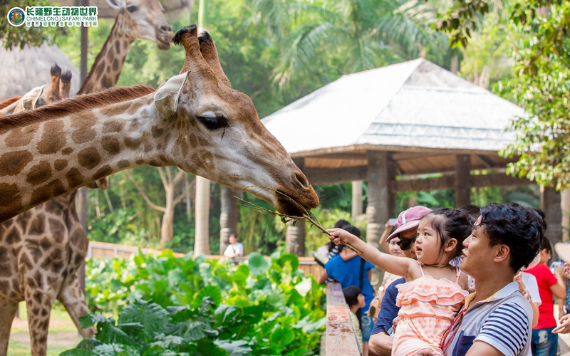
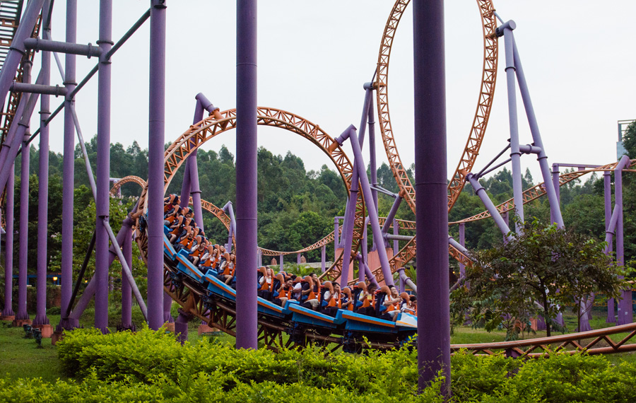
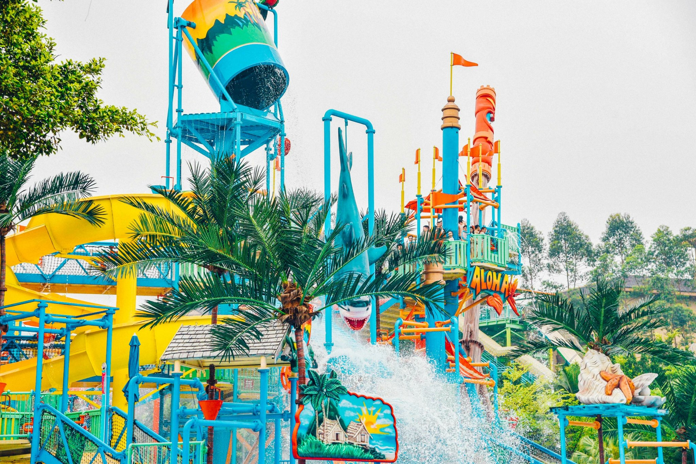
好玩，但是贵贵（一人五六百吧门票一天）
巨型海洋馆和游乐园的结合体，
你可以骂他的动物表演（但是他们宣传的时候说的是保护动物了解动物，比如白鲸）
但是虎鲸，白鲸，蓝鲸，派大星，章鱼哥，海绵宝宝（bushi），北极熊，企鹅……真的很可爱，大开眼界。
过山车也很好玩，小学有一次还把我坐到脑袋充血了（爽！）
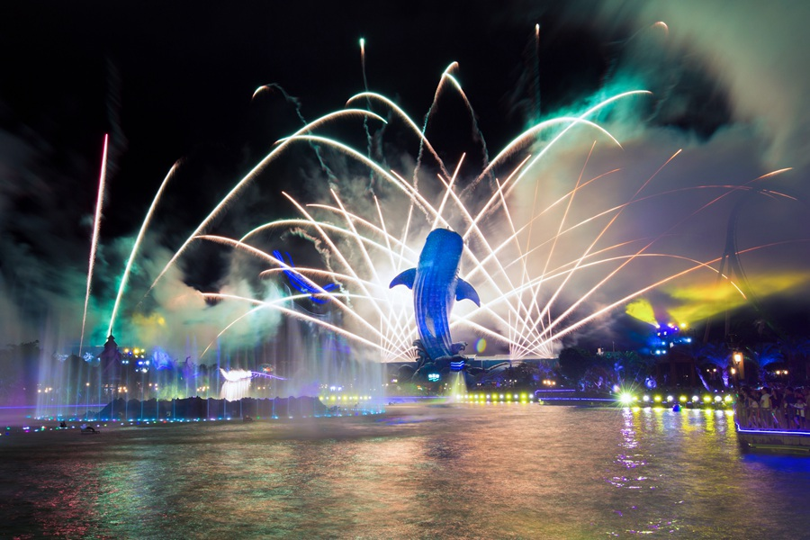
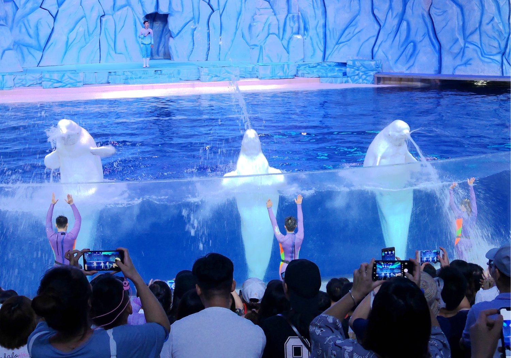
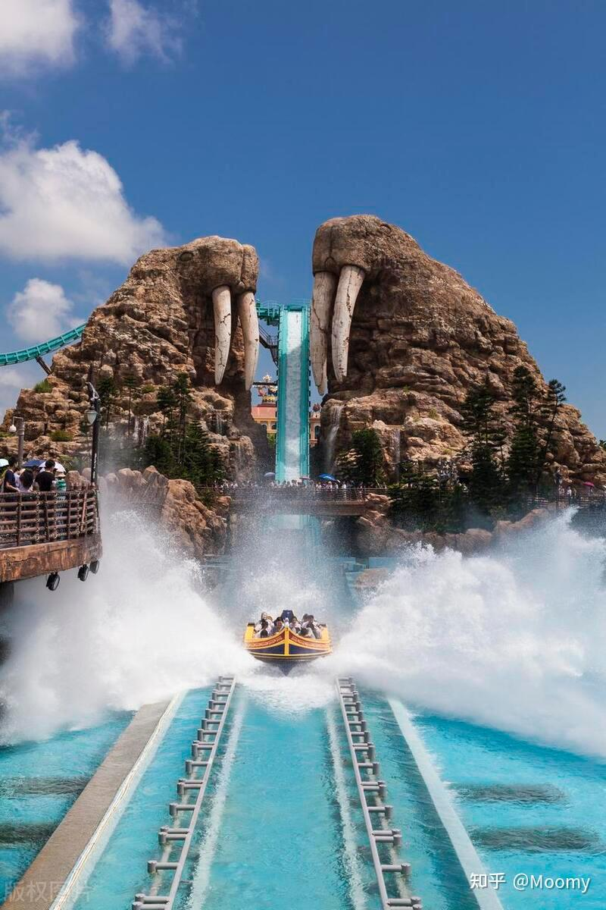
七星岩听过吗，还有个丹霞地貌来着，国家第一个啥保护区吧
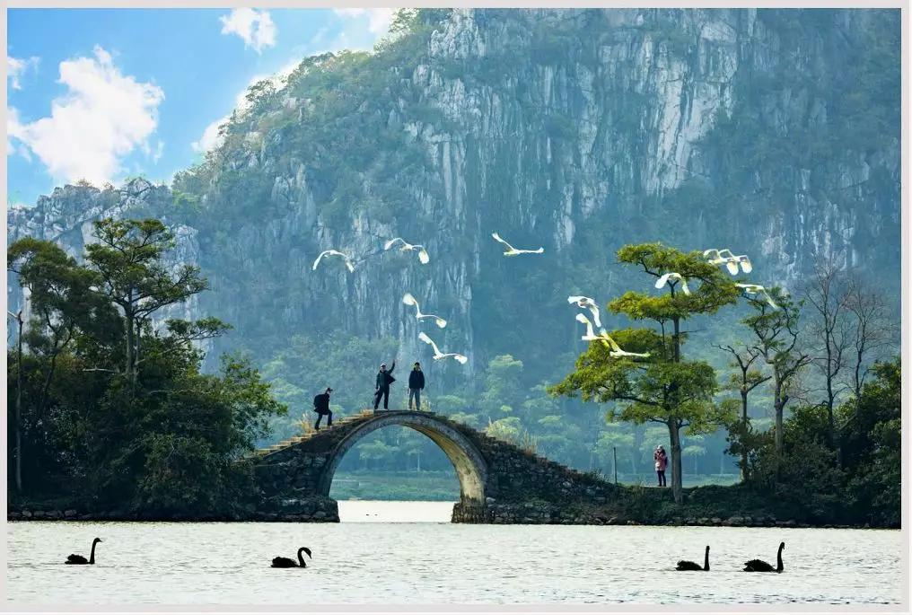
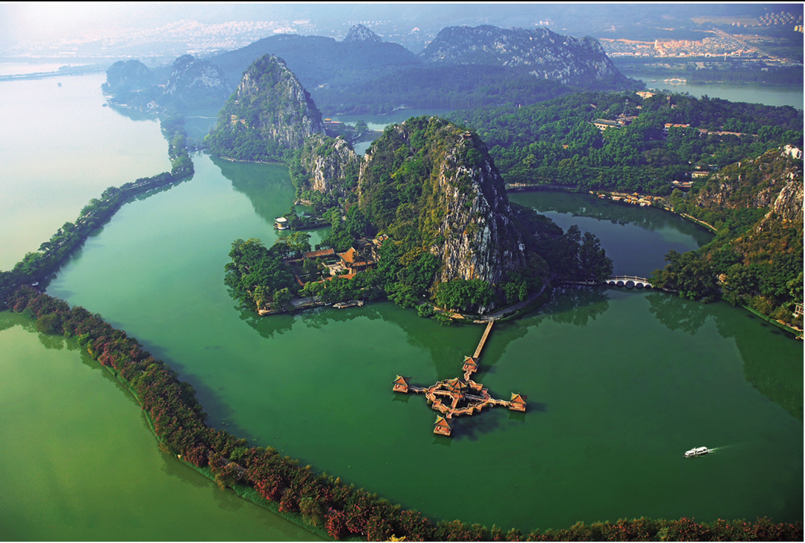
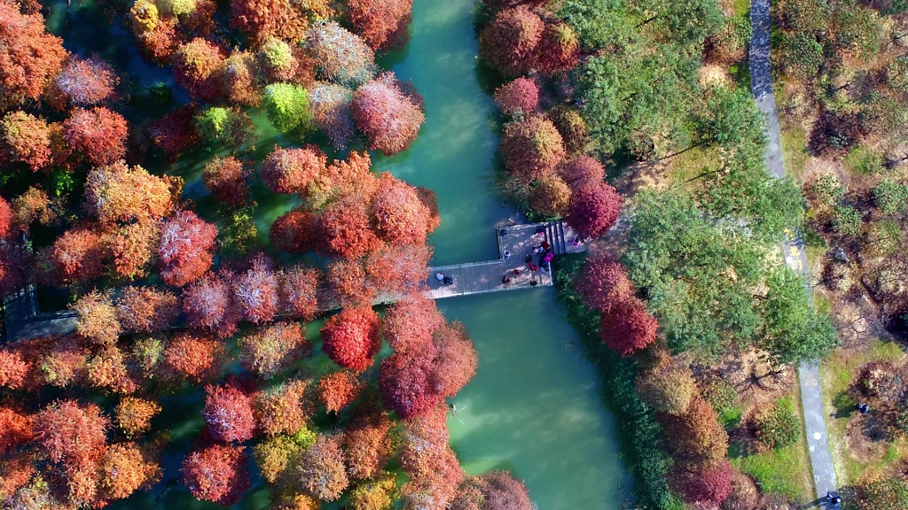
众所周知
不过不止可以从外面看，还可以爬上去，上面还有个玻璃观景房来着，
算是广州甚至广东的地标吧，甚至周围环境布局和东方明珠电视塔有异曲同工之妙，都可以隔江拍夜景
（但是广州塔不会镭射锁定蜜雪冰城哦）
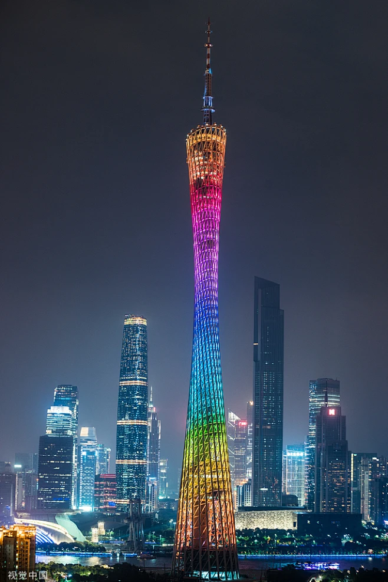
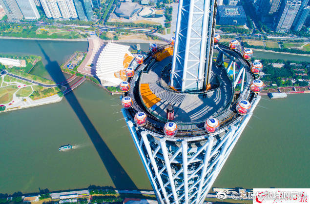
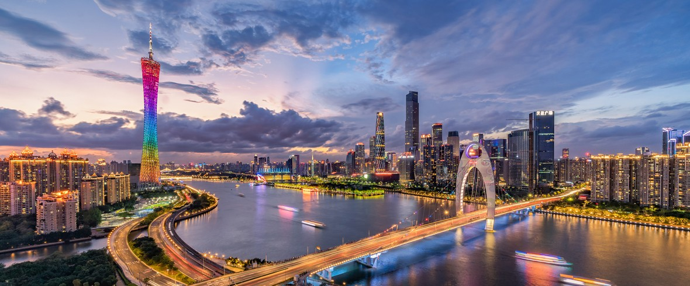
白云山，港珠澳大桥（看看而已，不过还是挺壮观的），深圳欢乐谷，深圳世界之窗……
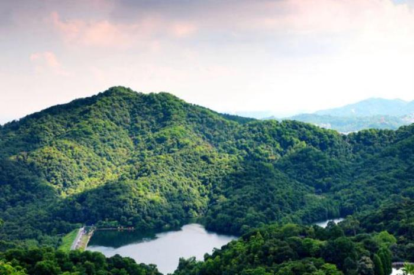
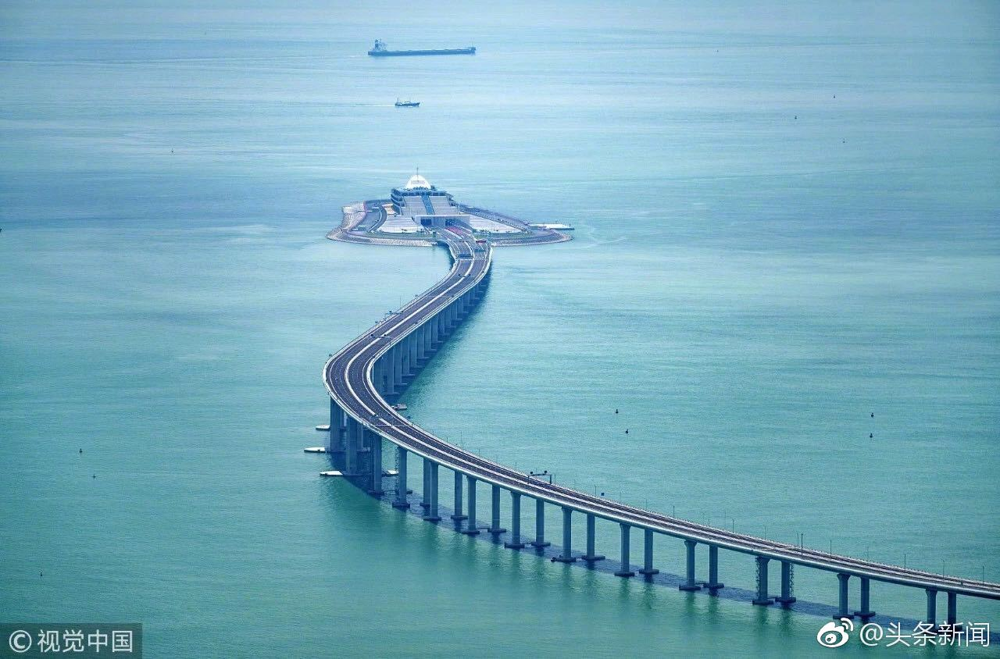
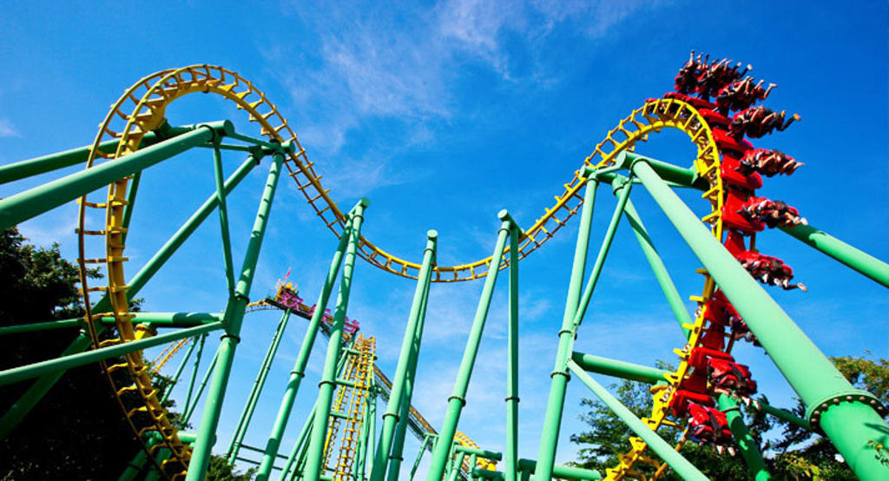
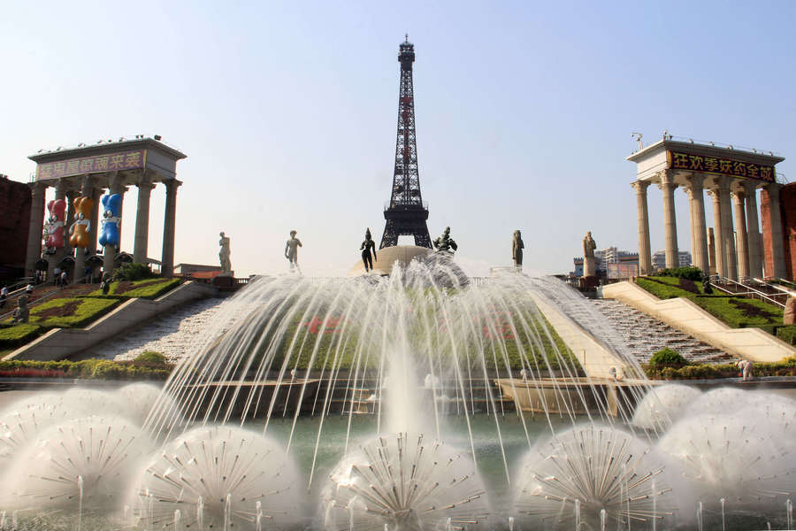